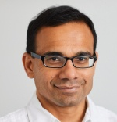
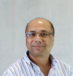
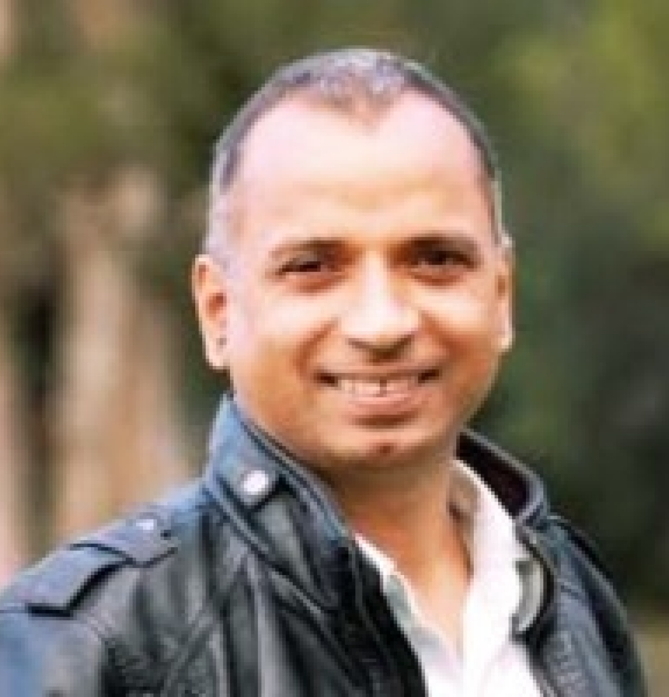
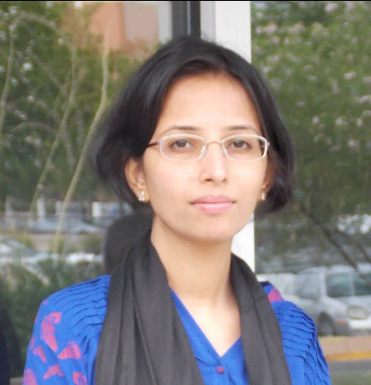
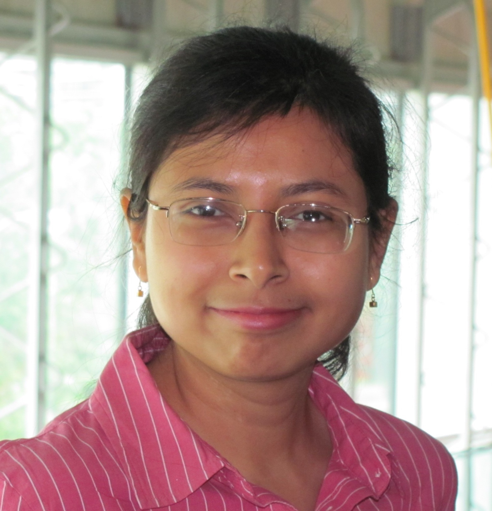

Salil S. Kanhere
Professor, UNSW



Sanjay Jha
Professor, UNSW



Surya Nepal
Research Scientist, Data61 CSIRO


Arash Shaghaghi
Senior Lecturer, UNSW


Hammond Pearce
Lecturer, UNSW


Helen Paik
Associate Professor, UNSW


Mahbub Hassan
Professor, UNSW



Rahat Masood
Lecturer, UNSW



Sushmita Ruj
Senior Lecturer, UNSW